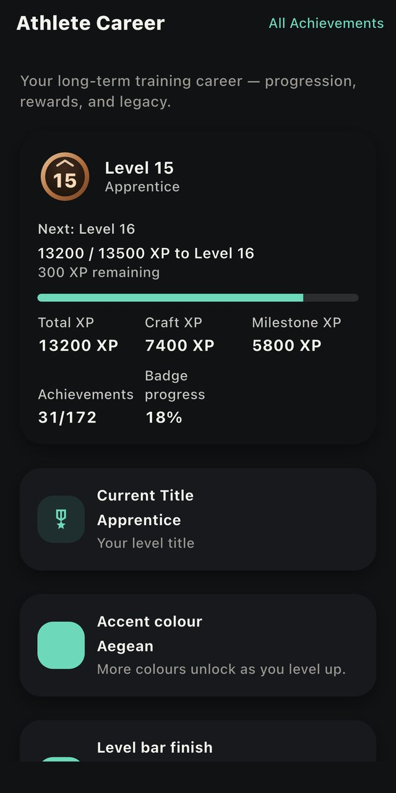
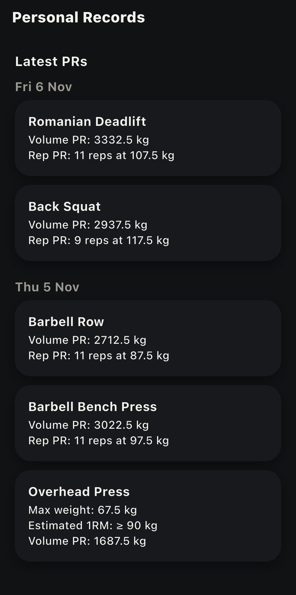
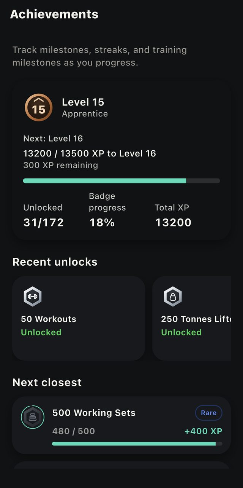
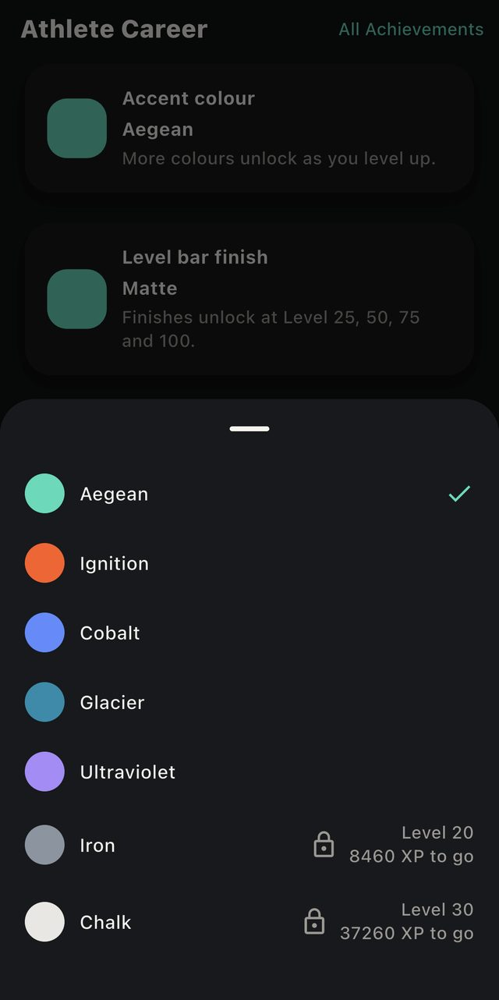

Train by the evidence.
Kompsatos is a training app built by a physiotherapist who lifts. Its programs, progression rules, coaching notes and targets are built on published research, not trends.
Free. On iPhone through Apple's TestFlight: open the link on your iPhone. On Android through Google Play, in two steps.

A coach that reads your training, not your mood.
Plans built from the research
Your program sets weekly sets per muscle within published ranges, puts the heavy lifts first, and keeps a session to at most 24 working sets when you train four or more days a week. Every day shows how long it really takes, warm-up sets included. Your next load comes from your own recent sessions (for machines and cable stacks, on the same one), and a weekly review sums up what you did.
Records that are real
Your first log of an exercise is your starting point, not a record. Records count per exercise and per machine, and a jump bigger than training can explain (more than 1.5× your heaviest load) starts a new baseline instead of a fake record. One badge per set.
Made for the gym floor
The rest timer runs on your Lock Screen and in the Dynamic Island on iPhone, and in a notification on Android. A plate calculator and warm-up sets for your top lifts, notes on any set, undo when you tap the wrong thing, and reminders only on your training days.
The rest of your week, in context
Sleep, body weight and waist trends sit next to your training, with protein and rate-of-loss guidance taken from meta-analyses. On iPhone, body weight and sleep can come straight from Apple Health, and your finished workouts can be saved there, if you turn it on.
Rewards for consistency, not for overdoing it
172 achievements, 100 levels, titles and colours you unlock. Points come from keeping your plan, never from extra volume. Charts follow your lifts and your body, with a body outline drawn from your own measurements.
Yours, on your phone
No account needed. With an account and your consent, a cloud backup brings your training, programs, calendar changes and settings to a new phone. Export everything to CSV, JSON or PDF for your coach or physio, free.



The numbers come with sources.
A few of the rules inside the app, and where they come from.
More weekly sets build more muscle, with diminishing returns. Your weekly sets per muscle are set within that dose-response, and lower when you start out.
Pelland JC et al. Sports Med 2026;56(2):481–505 (meta-regression, 2,058 participants).Per muscle in one session, gains levelled off at about this point. The app aims to keep a muscle's sets in one session below it and spreads the rest of the week over its other days.
Remmert JF et al. SportRxiv 2025, preprint (meta-regression of per-session volume).Strength rose most in the exercises done first in a session. Compound lifts open the day and smaller muscles come last, so a long day trims the arms, not the squat.
Nunes JP et al. Eur J Sport Sci 2021;21(2):149–157 (meta-analysis).Daily protein beyond which extra protein added little to muscle gain in adults doing resistance training.
Morton RW et al. Br J Sports Med 2018;52:376–384 (meta-analysis, 49 trials).Rate of body-weight loss recommended to keep muscle during a cut.
Helms ER, Aragon AA, Fitschen PJ. J Int Soc Sports Nutr 2014;11:20.Tested powerlifting results behind the strength levels you can unlock for squat, bench press and deadlift.
van den Hoek DJ et al. J Sci Med Sport 2024;27(10):734–742.Estimated maxes are trusted up to 10 reps to failure. Longer sets count only as a lower bound, because predictions get less accurate as reps go up.
Reynolds JM, Gordon TJ, Robergs RA. J Strength Cond Res 2006;20(3):584–592.Hi, I'm Dimitris.
I'm a physiotherapist and I train. I built Kompsatos to fix the mistakes I and the athletes around me made for years. I share every step of the build, the research behind each decision, and my own training with the app. The name comes from the Kompsatos, a river in Thrace, northern Greece.
Where it's going.
- NowOpen beta on iPhone through TestFlight and on Android through Google Play testing, with a weekly review of your training, Apple Health on iPhone, and a cloud backup that brings your training and settings to a new phone.
- NextKompsatos on Google Play for everyone, and share cards for your progress.
- LaterLeagues: weekly groups, country and world rankings. They open once 100 athletes have joined.
The coach is free. Always.
Training guidance should never sit behind a paywall. Pro adds depth and convenience on top. No ads, ever, and your data is never sold.
Kompsatos
- Unlimited logging, plans and load suggestions
- Records and estimated maxes per machine
- Coaching insights, sleep, body and nutrition guidance
- All achievements, levels, titles and colours
- Weekly review, and leagues when they launch
- Rest timer on the Lock Screen and Dynamic Island
- Export your data to CSV, JSON and PDF
- Backup and restore
Kompsatos Pro
- Full chart history (Free shows 3 months)
- Apple Watch logging and rest timer
- Home-screen widgets
- Pro icons and themes
- Early access to new features
Founding Athletes
- For beta testers, on iPhone or Android, who stay active for 4 weeks or more
- A permanent “Founding Athlete” title that can never be bought
Prices are planned and may change before launch. Local prices vary by country. Nothing that is earned in the app (XP, league places, titles, season rewards) can ever be bought.
Questions people ask.
Is Kompsatos free?
Yes. The coach is free, always: logging, plans, load suggestions, records, guidance, export of your data and the rest timer on your Lock Screen. A paid Pro tier is planned for extras such as full chart history and Apple Watch.
When do I get access to the beta?
Right away. On iPhone, open the beta link, install Apple's TestFlight app if it asks, then tap Install. On Android, follow the two steps below. Places on iPhone are limited; if the beta is full, join the waitlist and you will hear from us when places open.
Is there an Android version?
Yes, in beta. Join the testers group with the Google account on your phone, then open the testing link and tap Become a tester; the app installs from Google Play like any other. Google opens an app to everyone after a group of testers has used it for 14 days, so every Android tester brings the public release closer.
Do I need an account, and where does my data go?
No account is needed. As a guest everything stays on your phone. With an account, and only with your explicit consent, your training and your settings are backed up to a database in Frankfurt, Germany, so you can restore them on another phone. No ads, no analytics, and your data is never sold. Details in the privacy policy.
Is this medical advice?
No. Kompsatos gives training information based on published research. If you have pain, an injury or a medical condition, talk to a qualified health professional.
Want in?
Free, on iPhone and Android.
Through TestFlight
Open the beta link on your iPhone. If it asks, install Apple's TestFlight app, then tap Install.
Get the iPhone betaThrough Google Play
- Join the testers group with the Google account you use on your phone.
- Open the testing link, tap Become a tester, then install Kompsatos from Google Play.
iPhone beta full? Join the waitlist; it is only used to tell you about the beta. See the privacy policy.